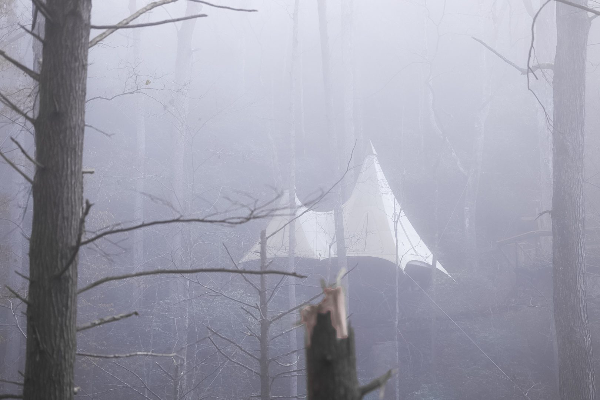
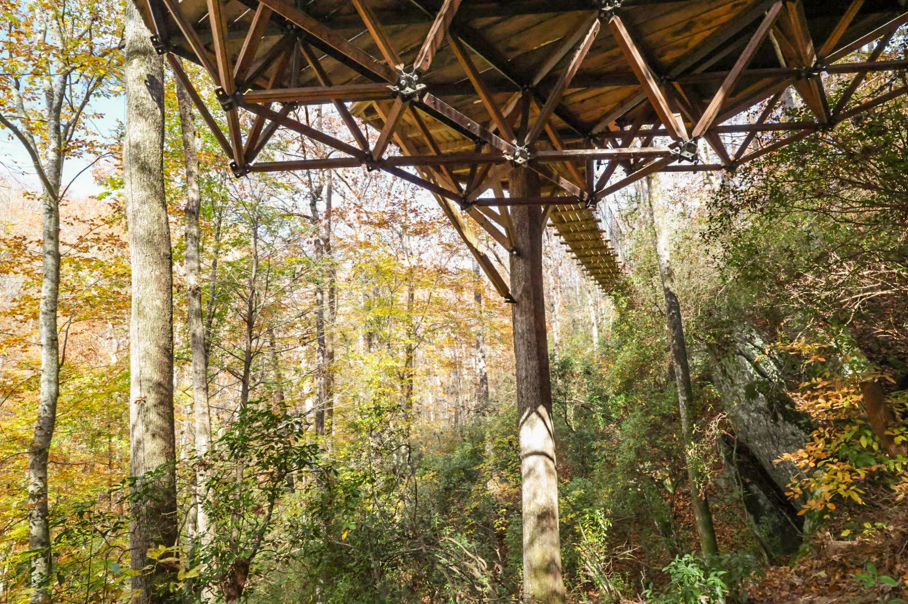
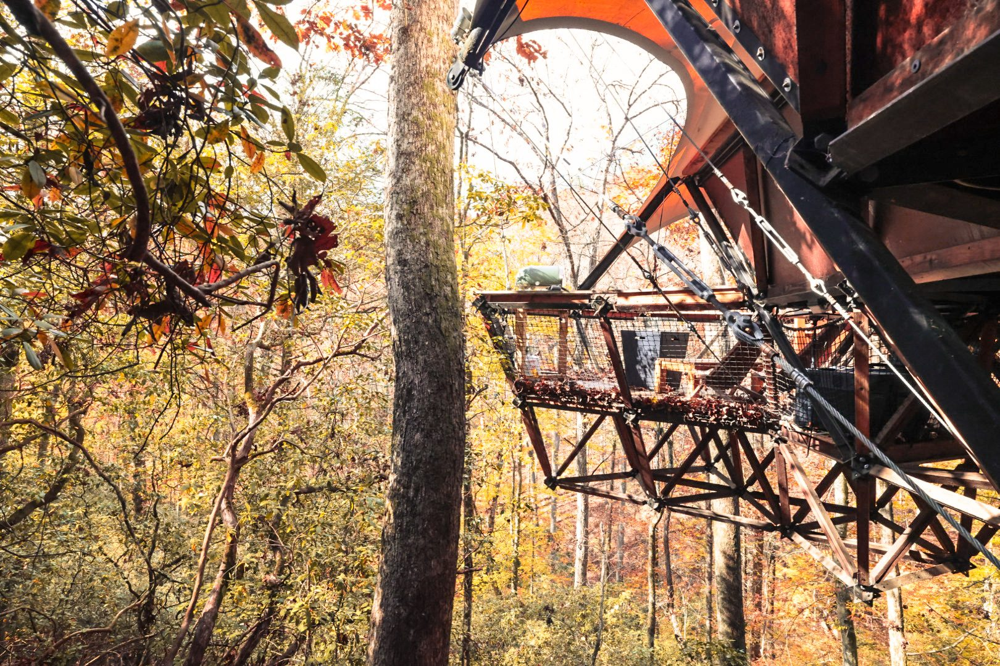

Our Story
We Came Here to Heal.
We Stayed to Build.
There's a place in the North Georgia foothills, about ninety minutes from Atlanta, where the road descends through a tunnel of mountain laurel so thick the branches nearly meet overhead.
Mick and Livy found it during the hardest season of their lives. They'd been through something that nearly broke them — the kind of loss that leaves you sitting on the couch for a week, barely speaking, because there aren't words for it yet. When words finally came back, they were small ones. Maybe a long weekend somewhere. A change of scenery. Just to breathe.
Livy mentioned a town some of her friends had visited for a wedding — a place called Dahlonega. Small town. Wineries. Mountains. "What about there?" she said. Mick had never heard of it.

Two weeks later, on a cold January morning with fog still burning off the valley, they drove down a driveway lined with mountain laurel. Two hundred feet in, Livy said: "This is it. Come on."
They hadn't even seen the house yet.
They'd been looking for a place to start their family. Mick had just exited his construction business. Livy was transitioning out of running a gymnastics facility. They'd scouted land in North Carolina, South Carolina, Tennessee — nothing felt right. Dahlonega was supposed to be a weekend getaway, not a life change.
They stayed in a treehouse across the street from where they live now — not a real treehouse, just a house with a tree built into the deck. But something about the canopy, the creek, the elevation, the quiet — it planted a seed.

They looked at five properties that weekend. All overpriced. All wrong. They were ready to drive the nine hours back to Ohio and keep looking. Then their realtor called on Saturday night: "One more just popped up. The photos are terrible. But go see it tomorrow."
Mick wanted to skip it. He wanted cinnamon buns from Picnics and an early start on the drive home. Livy said, "Why don't we just take our coffee and walk around it?"
Two hundred feet down the driveway, through the laurel tunnel, through the fog — "This is it."
They wrote an offer within a week. Before they even closed, they had a treehouse designer on the property, picking sites. They found five.
What We Wanted to Build
Mick has always been the kind of person who recharges by disappearing. Multi-day hikes into backcountry. Canoe trips deep into places with no cell service. Hunting and fishing trips where the only sounds are water and wind. That was always his idea of a vacation — get lost, stay lost, come back different.
But most people don't have two or three weeks to paddle into the wilderness and set up camp. They have a weekend. Maybe two nights between the obligations that never stop pulling at them. They want the silence and the forest and the feeling of being truly away — but they don't have the time or the gear or the trail miles to earn it the hard way.
That's what Loxley was designed to solve.

We loved this property so much that we wanted to share it — not as a business first, but as a place where people could come and do what the forest does for us. Unplug. Breathe. Sit with the person you love and hear nothing but the creek and the wind through the canopy. Watch your kids discover what it's like to be somewhere with no screens competing for their attention.
We designated five treehouse sites on the property before we'd even closed on the land. The vision was always the same: put people in the canopy, surrounded by wilderness, with just enough luxury that they don't have to rough it — a warm shower, a comfortable bed, a pizza oven on the sky deck, fresh pastries in a TreeMail basket at their door — but not so much that it distracts from the reason they came. The forest is the experience. Everything else just makes it easier to be here.
How many people can say they've spent the night hanging from five oak trees, sixty feet in the air, with nothing between them and the stars but canvas and canopy? That's what we wanted to offer. Not a hotel room with a view. A night in the forest that changes how you feel when you drive home on Sunday.
What We Actually Built
Mick and Livy designed the treehouses in collaboration with a treehouse engineering firm — a tetrahedron frame system that sandwiches steel between wood for maximum strength at minimum weight, suspended from living trees by specialized hardware. The roof is canvas instead of timber, again to keep the load on the trees as light as possible. Every structural element was engineered, every connection point calculated.
Then the real work began.

Nothing came in by machine. No ATVs. No excavators. Every beam, every bolt, every panel was carried four hundred feet down the mountainside by hand — by Mick, by a team of carpenters, and by a crew of arborists and riggers, some of whom had been featured on HGTV. They used wagons and carts when they could. They used their shoulders when they couldn't. They did it this way because Mick and Livy loved the forest too much to tear it up with equipment.
Mick built much of the framing himself. The modular system was designed to bolt together like a massive set of building blocks — triangles interlocking with triangles — but off-site engineering and on-site reality don't always agree. Making it fit, sixty feet in the air, in the canopy, over a creek, on the side of a ridge — that was the craft. Nine months from breaking ground to a finished treehouse. Triple what they'd planned. The terrain and complexity of building something this ambitious in a living forest humbled everyone involved.
Livy was pregnant with their first daughter, Aurora, through the entire build. Aurora arrived before it was finished. They paused for six months — because family comes first, always.

The rope bridge came later. Mick could see the path — a clear line through the canopy that screamed "this is where it goes." The arborists warned him: a hundred feet is a massive span, and trees could come down on it. They built it anyway. An elite crew of riggers from North Carolina strung the first cables between the trees, and in two weeks, those cables became a hundred-foot rope bridge suspended over the valley. Mick was alongside them the entire build, doing carpentry and saw work. The deck planks are milled from white oak salvaged from standing dead trees on the property — wood that was already here, given a second life.
By then, Livy was pregnant with their second daughter, Tilly Mac. The bridge was built while Tilly Mac was on the way.
That's the rhythm of Loxley Forest. Build. Pause for the family. Build again. No investor timelines. No grand opening deadlines. Just two people building something extraordinary at the pace that lets them be present for the life growing alongside it.
Why Loxley
The name comes from Robin Hood — Robin of Loxley, who made his stand in Sherwood Forest. Mick and Livy always loved that story. Not the stealing-from-the-rich part — the living-in-the-forest part. The idea that a forest could be a home, a refuge, and an adventure at the same time. Instead of Sherwood, they called it Loxley. Their own forest. Their own story.
What You'll Find Here
Two treehouses suspended sixty feet in the canopy, connected by a hundred-foot rope bridge. A cedar yurt coming this fall. Forty-two acres of hardwood cove forest with trails down to the creek. A family that lives on the property and greets every guest personally. Two little girls who think rope bridges are a normal way to get home.

When you stay at Loxley, the person who designed your treehouse is the same person who'll hand you a welcome basket. The woman who insisted on a bathroom in the canopy — because she wasn't climbing down a tree in the middle of the night — is the same woman who puts wildflowers on your table and writes your welcome note.
This isn't a hospitality brand. It's a family's home that we open to people who need what the forest gives — silence, elevation, and the feeling of being somewhere that was built with love by people who live inside it.
We're glad you found us. Come up. The forest is waiting.
What We Believe
The Values
Built, Not Bought
Every beam was carried down the mountain by hand because we loved the forest too much to bring in machines. That's how we do everything here.
Family Is the Floor Plan
We paused the build twice for our daughters. Every decision starts with: does this serve the family who lives here and the families who visit?
Silence Is the Product
We don't sell square footage or thread count. We sell the experience of being in a forest with nothing demanding your attention.
